Created by Jim Birch
jimbir.ch/optimizing
@thejimbirch
Xeno Media, Inc.
Helps us to:
Allows us to:
Going back to 2010, Developers have been writing about Panels' performance advantage
Protect your content, and your user's access by using Panes.
Adds a new Wrapper markup option to all fields
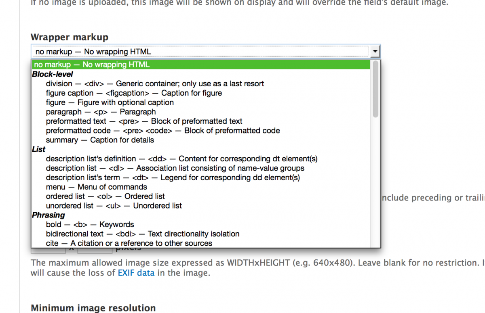Create a new TPL in your theme, and Fences will find it and add it to the list.
field--fences-NAMEOFELEMENT.tpl.php
and
field--fences-NAMEOFELEMENT-multiple.tpl.php
Remove all excess HTML from Templates in out theme
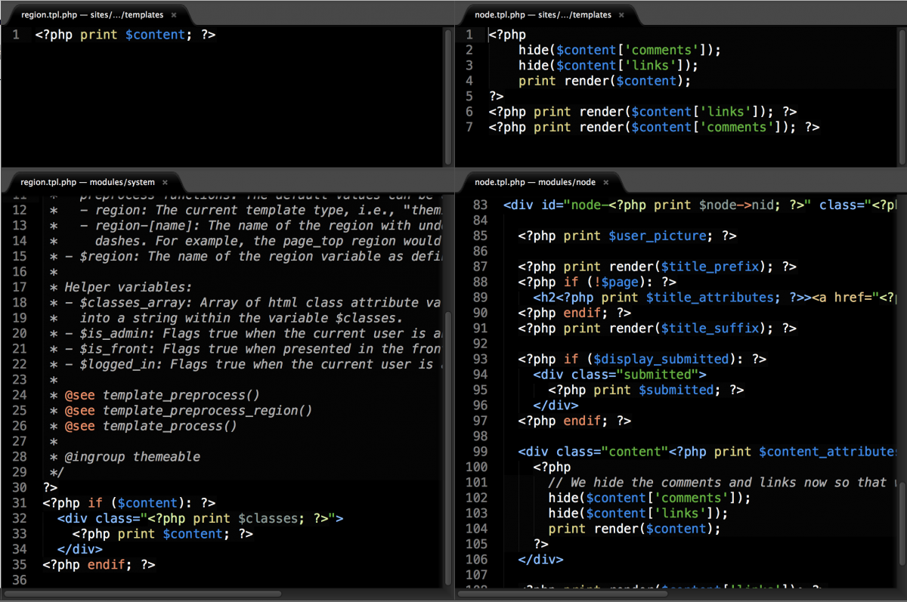You can still add customized templates as you normally would.
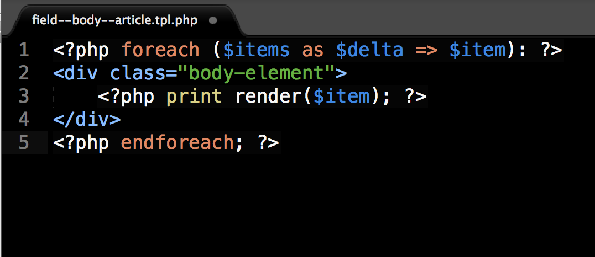
; Panels layouts. You can place multiple layouts in this folder.
plugins[panels][layouts] = layouts
/sites/all/modules/contrib/panels/plugins/layouts/
The plugin contains 4 files:
Panels Everywhere is the darker regions, Traditional Panels, the lighter.
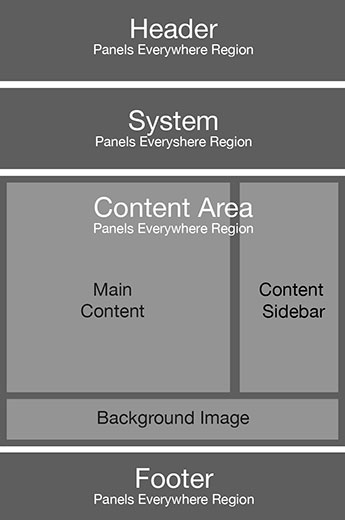New and Existing pages can be added or controlled by admins or modules.
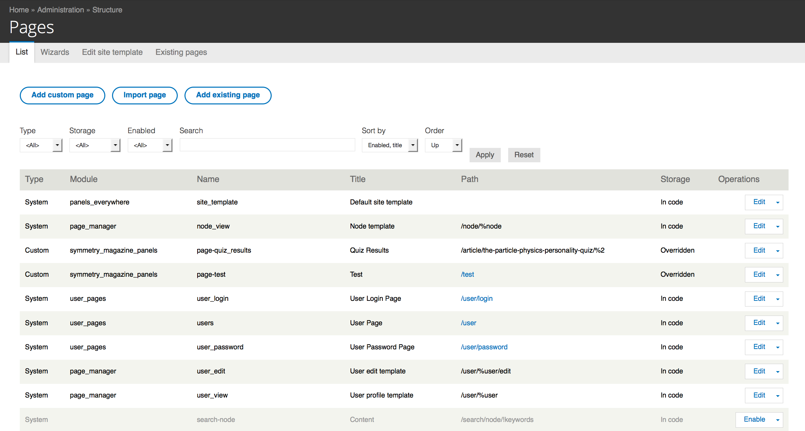Overview with quick links to common areas.
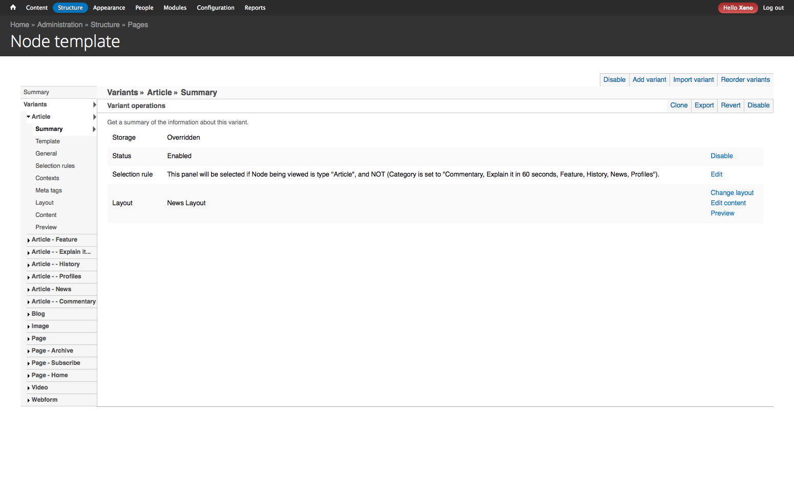Panels Everywhere allows you to have different Site templates.
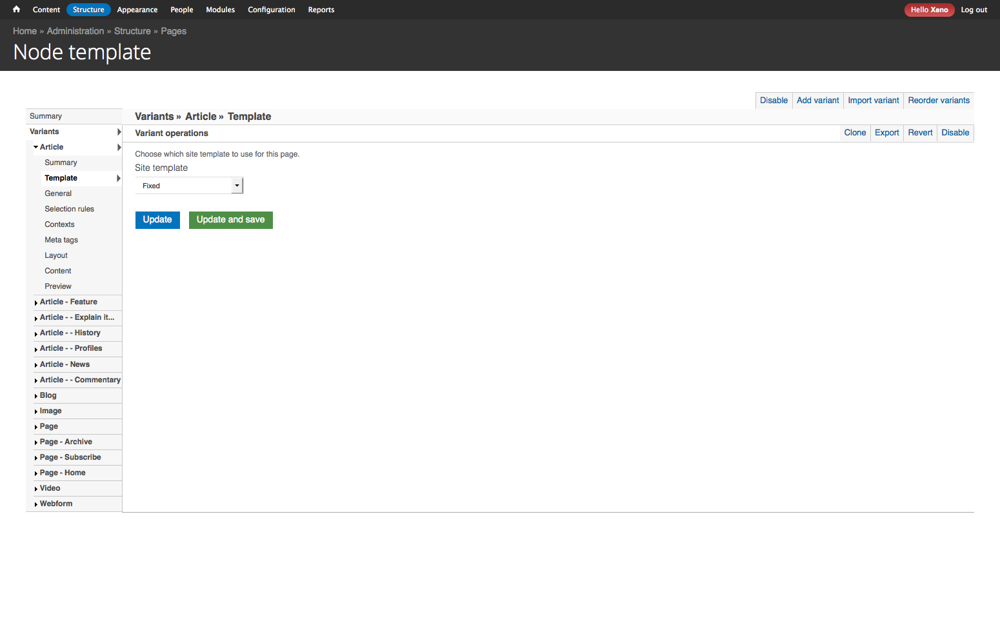Define general attributes of the page including CSS
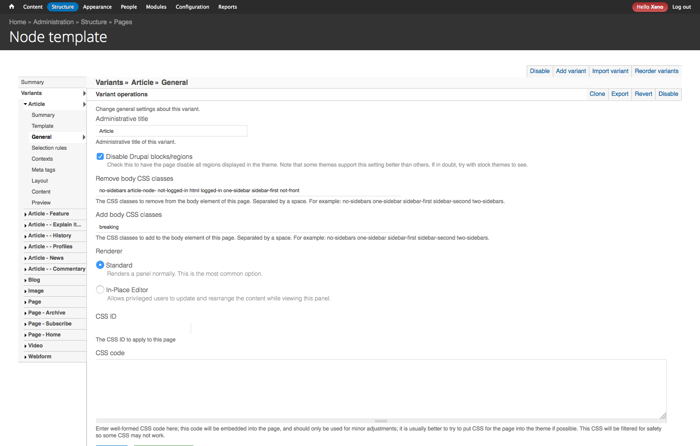When this pane will be (or not be) used.
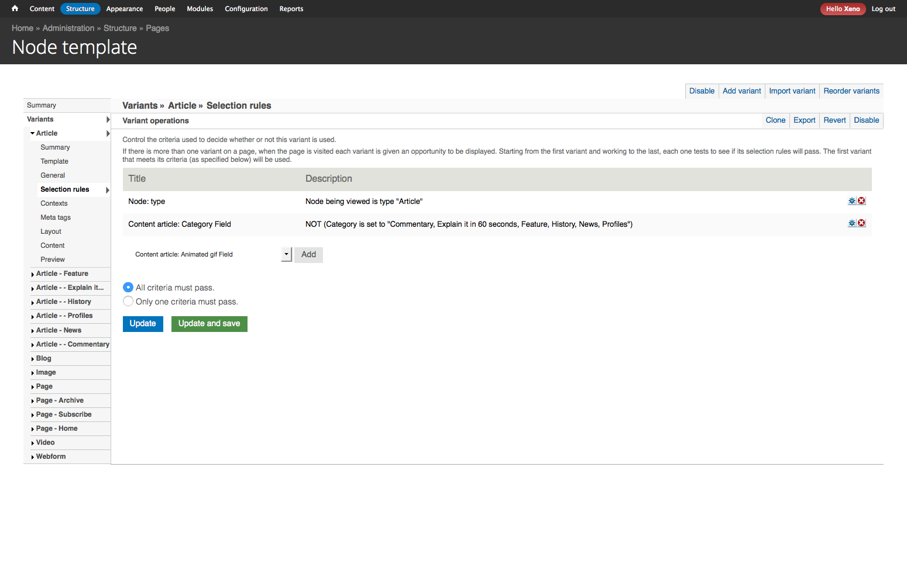For more advanced rendering on pages.
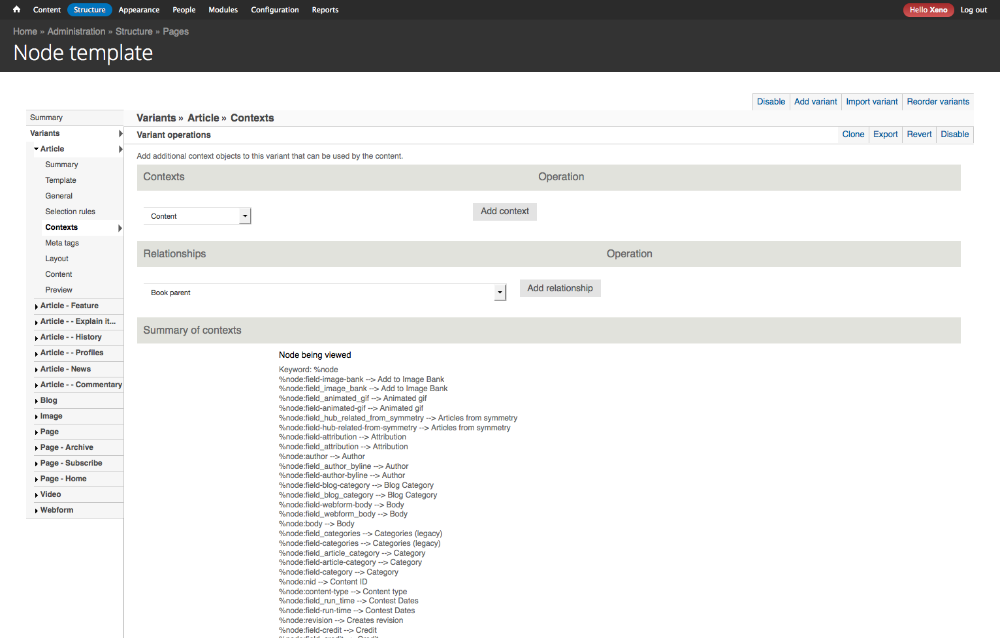Add to custom pages, or override existing pages' meta tags.
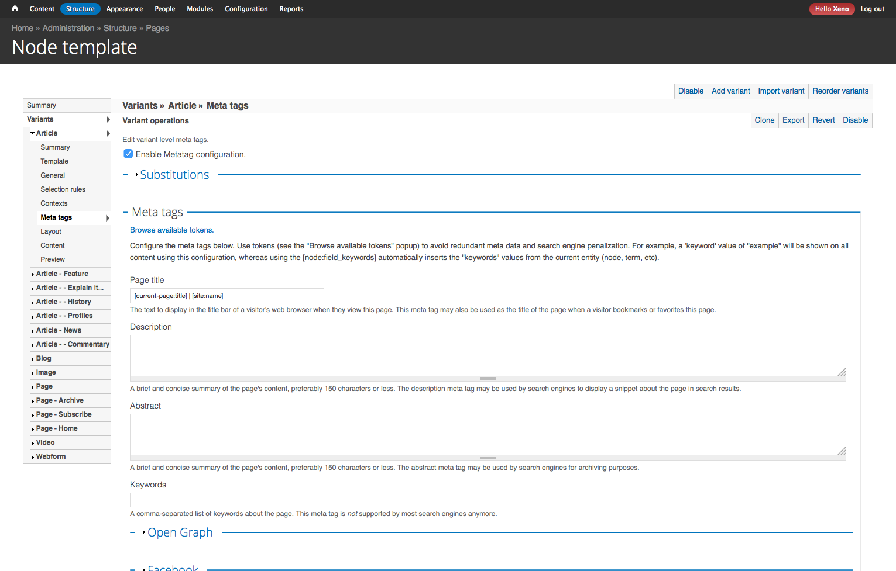Choose the layout for the page.
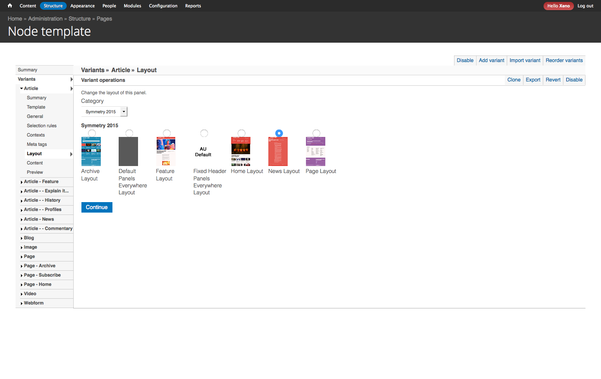Select and add content to the page.
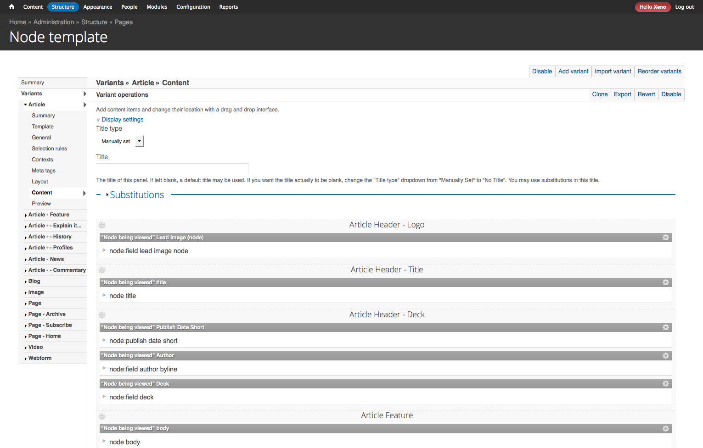Define the default layout, provided by the Panels Everywhere module.
General Tab: Remove Excess CSS
no-sidebars page-node- node-type-page not-logged-in html
logged-in one-sidebar sidebar-first not-front
You can also add classes, and ID, or additional CSS to be loaded inline.
Choose the Layout from what we defined in the .inc file of the plugin.
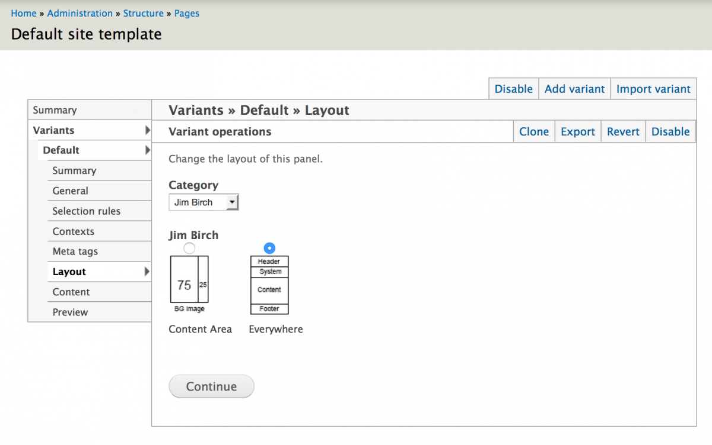Add the Content
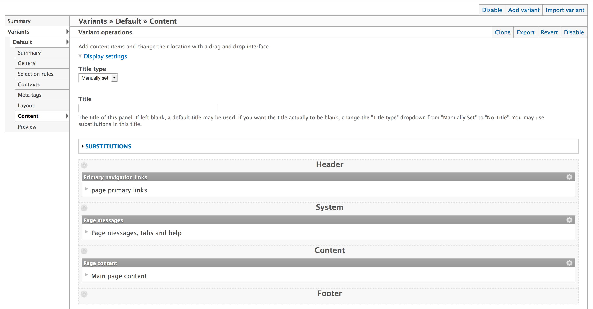Be sure to include
Create Variants for Node, or each Node Type
Selection Rules can be positive, or negative (NOT)
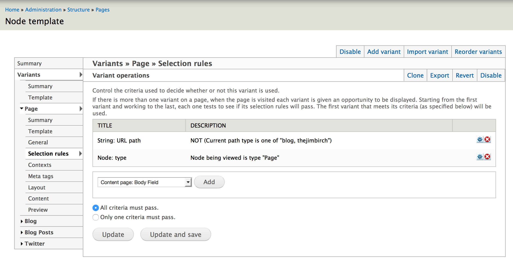Choose Layout, from the second layout we created earlier
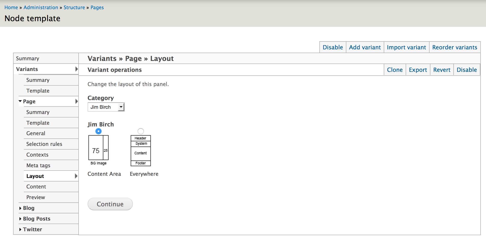Choose Content: Individual fields, or Entity View Modes like Full Content or Teaser.
Plus you can add Content Panes or Blocks.
Here's another example, of a variant, Node Type = Blog. I added the Disqus Comment Block
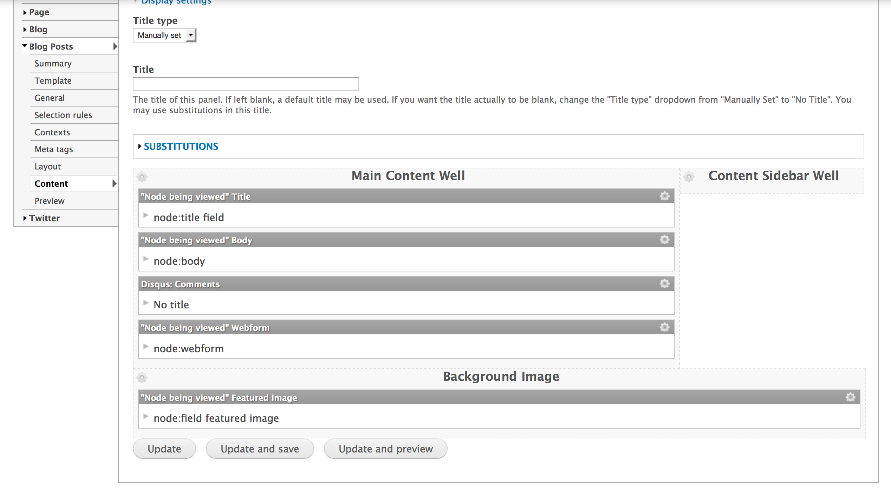Created by Jim Birch
jimbir.ch/optimizing-drupal-7-html-markup
@thejimbirch
Xeno Media, Inc.